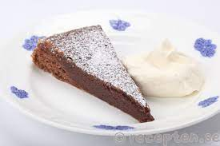

Kladdkaka

Recept på supergod och kladdig kladdkaka. Den är snabb och enkel att göra
eftersom du rör ihop smeten direkt i
kastrullen. Njut med vispad grädde eller glass.
Receptet:
- 100g smör
- 2.5dl strösocker
- 2 ägg
- 1 dl vetemjöl
- 3 msk kakao
- 1 tsk vanlijsocker
Hur man gör:
- Sätt ugnen på 175 grader.
- Smält smöret i en kastrull. lyft av kastrullen från plattan.
-
Rör ner socker och ägg, blanda väl. Rör ner övriga ingredienser så allt
allt blir väl blandat.
-
Häll smeten i en smord och bröad form med löstagbar kant, ca 24 cm i
diameter.
-
Grädda mitt i ugnen ca 15 min. Kakan blir låg med ganska hård yta och
lite kladdig i mitten
-
Låt kakan kallna. Pudra över florsocker. Servera med grädde eller glass
och frukt.